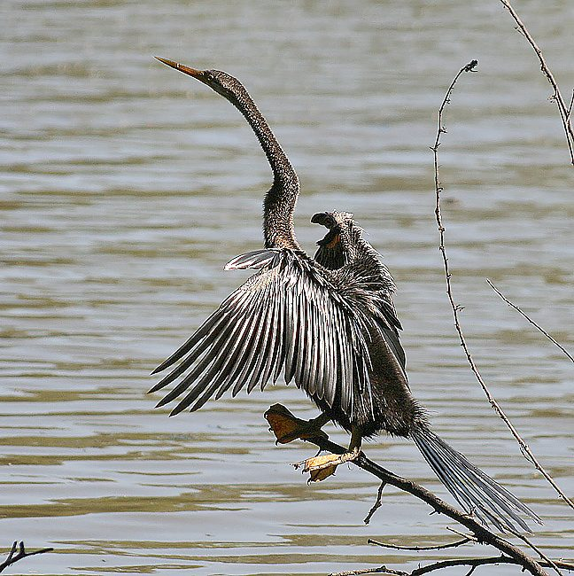

पनडुब्बीOriental Darter
Anhinga melanogaster · Anhingidae · BRD-0099

- Scientific name
- Anhinga melanogaster Pennant, 1769
- Family
- Anhingidae
- Hindi
- पनडुब्बी
- Local names
- pandubbi, pan dubbi, pandubi, snake bird, darter
- Status here
- native
- IUCN
- LC
- Review
- audited and independently read
When to look कब देखें
Present all year.
पनडुब्बी / Oriental Darter
Anhinga melanogaster Pennant, 1769 — Anhingidae
पनडुब्बी — घाघरा और राप्ती नदी का एक अद्भुत पक्षी, जिसकी लंबी, सीधी, तीखी चोंच और बहुत लंबी नाज़ुक गर्दन होती है। यह पूरे साल रहता है। इसे "पनडुब्बी" (submarine, underwater) कहते हैं क्योंकि यह पानी में अपने सिर को ही पानी के ऊपर रखता है — शरीर पूरी तरह पानी में डूबा होता है, जिससे दूर से सिर्फ एक सर्प जैसी लंबी गर्दन दिखती है। यह मछलियों को तेज़ी से और निपुणता से पकड़ता है।
Quick Identification त्वरित पहचान
| Feature | Description |
|---|---|
| Size | Medium-large; 85–100 cm long |
| Distinctive feature | Extraordinarily long, slender, snake-like neck |
| Bill | Long, straight, sharply pointed (diagnostic for darters) |
| Plumage | Dark glossy black-green overall |
| Behaviour | Swims with body submerged, only neck and head visible |
| Posture | Perches with wings held open; neck often kinked in S-shape |
| Feeding | Uses quick strike of neck to spear fish |
Field tip: The Oriental Darter is unmistakable — a black water bird with a distinctly snake-like neck and slender pointed bill. When swimming, only the long neck and head are above water, giving a serpent-like appearance. The straight, pointed bill separates it from cormorants (which have hooked bills).
हिंदी — कैसे पहचानें:
बहुत लंबी, सीधी, पतली गर्दन।
सीधी, तीखी चोंच (कौवे की तरह नहीं)।
पानी में डूबा होता है, सिर्फ गर्दन दिखती है।
काली चिड़िया, पंख खोलकर सुखाती है।
Morphology आकारिकी
Biometrics:
| Measurement | Range |
|---|---|
| Total length | 850–1000 mm |
| Neck length | 200–280 mm (extraordinarily long) |
| Wing (flattened chord) | 360–400 mm |
| Tail | 200–250 mm |
| Bill | 65–80 mm |
| Weight | 1000–1500 g |
Size: 85–100 cm long, but neck accounts for much of the length. Wingspan 120–140 cm. Weight 1000–1500 g. Males average larger than females.
Plumage: Predominantly glossy dark green-black overall. Breeding males develop white filoplumes (hair-like feathers) on head and neck during breeding season.
Neck: Extraordinarily long and slender — the most distinctive feature. Highly flexible; allowed to kink into S-shape on water.
Bill: Long (65–80 mm), straight, sharply pointed, slightly hooked at tip. Dark with pale cutting edges. Perfectly designed for stabbing and impaling fish.
Body: Streamlined for underwater swimming; body is flattened dorsally.
Legs and feet: Black; positioned far back on body (typical of diving birds). Fully webbed.
Eyes: Positioned high on head for better visibility when partially submerged.
Sexes: Males slightly larger; females duller in breeding season. Dimorphism less obvious than in many waterfowl.
Juveniles: Brownish rather than black.
Vocalisations. Largely silent. Occasional calls:
- Display call: Harsh, guttural croaking at nest; frequency 0.5–1.5 kHz.
- Contact call: Soft grunting between pair members.
- Alarm: Sharp hissing if threatened on nest.
हिंदी: बहुत खामोश पक्षी है। कभी-कभी कर्कश आवाज़ निकालता है।
Behaviour & Ecology व्यवहार और पारिस्थितिकी
Aquatic predator: The Oriental Darter is a specialized underwater hunter. It feeds on:
- Small to medium fish species (particularly schooling fish)
- Fish fry and juveniles
- Rarely tadpoles and aquatic invertebrates
Hunting technique: Dives from the surface or swims with body submerged. Uses the long neck in a rapid strike to spear fish on the bill. The bill's sharpness and lack of serration (unlike cormorants) is specialized for stabbing and impaling rather than gripping.
Swimming: Propels itself underwater using its webbed feet. Body rides very low in water due to dense plumage and reduced buoyancy.
Social behaviour: Usually solitary or in pairs; occasionally gathers in loose groups at good feeding sites.
Habitat preference: Associated with large river systems and lakes with clear to moderately clear water and abundant fish.
Thermoregulation: Plumage is not fully waterproofed; after diving, must spread wings to dry (thermoregulation and feather maintenance).
Predators: Fish eagles, marsh harriers; monitor lizards and snakes take eggs and chicks.
Population indicator: Presence indicates productive river systems with good fish populations.
हिंदी: नदी में पूरी तरह डूबकर मछली का शिकार करता है। गर्दन से तेज़ी से मछली छेदता है। पंखों को खोलकर सूखाता है।
Life Cycle / Phenology जीवन चक्र
Resident: Present year-round in eastern UP; no migration.
Breeding: April–June (pre-monsoon to monsoon).
Nesting: Nests colonially, often with other waterbirds. Platform nest of sticks in tall riverside trees or emergent vegetation.
Eggs: 3–4 pale blue eggs. Both parents incubate ~24–25 days.
Chicks: Altricial; fed regurgitated fish by both parents. Fledge at ~8 weeks.
Roosting: Communal night roosts on rocks and dead trees; spread wings to dry after feeding.
Moulting: Complex moult pattern; begins post-breeding (August–September), completes by December.
हिंदी: साल भर रहता है। अप्रैल से जून तक घोंसला बनाता है। कई पक्षी एक ही जगह घोंसला बनाते हैं।
Host Plants or Prey आहार
| Prey | Hindi | Capture Method |
|---|---|---|
| Small fish (schooling species) | छोटी मछली | Underwater strike with bill |
| Medium fish | मध्यम मछली | Spearing and impaling |
| Fish fry | मछली के बच्चे | Surface feeding |
| Aquatic larvae | जलीय कीड़े | Incidental capture |
हिंदी: मुख्य रूप से मछली खाता है। तेज़ी से गर्दन को आगे करके मछली को छेदता है।
Predators / Natural Enemies शत्रु
- Avian predators: Fish Eagles, Marsh Harrier, occasionally large herons
- Eggs and chicks: Snakes, monitor lizards, crows
- Adults: Large eagles (rare); snakes and otters at nest
- Parasites: Waterfowl helminths
हिंदी: बड़ी शिकारी चिड़ियाँ, साँप और गोह इसके बच्चों को खतरे में डालते हैं।
Agricultural / Human Relevance कृषि प्रासंगिकता
Protected species: Listed in Schedule IV of the Wildlife (Protection) Act 1972, amended 2022. Fully protected; hunting prohibited.
Fisheries: Historically viewed with some concern by fishing communities due to fish predation, but impact is generally minimal relative to total fish populations.
Cultural significance: Named पनडुब्बी (pandubbi, from "submarine") because of its underwater swimming behaviour.
Scientific importance: Indicator species for river health and water quality. Its presence indicates productive river systems with diverse fish populations.
uses: [] caution: [protected]
हिंदी: यह विधि अधिनियम 1972 की अनुसूची IV के अंतर्गत संरक्षित है।
Expected Locally स्थानीय रूप से अपेक्षित
This species is NOT a field record. The description below indicates where Oriental Darters should be looked for.
Year-round presence: Expected throughout eastern UP on the Ghaghra and Rapti river systems and associated lakes.
Habitat preference: Associated with large rivers; less common on small ponds or still water.
Peak visibility: More vocal and visible during breeding season (April–June). Year-round, but roosting sites are most obvious at dawn and dusk.
Nearest published record: The Ghaghra river and associated lakes support established populations. ZSI records confirm their presence throughout the region.
What a first record would be: A dated photograph clearly showing the bird's distinctive snake-like neck and pointed bill, with date and GPS location, submitted through the About page.
हिंदी: घाघरा नदी पर साल भर देखा जा सकता है। पहला रिकॉर्ड फोटोग्राफ और तारीख के साथ चाहिए।
Distribution वितरण
Global range: Indian subcontinent, Southeast Asia, and parts of Africa. Four subspecies recognised globally; A. m. melanogaster in India.
In India: Distributed throughout, associated with river systems and large water bodies.
In Uttar Pradesh: Widespread on major rivers, particularly the Ganges and its tributaries.
In Basti district / eastern UP: Resident on the Ghaghra and Rapti river systems and associated wetlands throughout the year.
Research Questions शोध प्रश्न
- What are the fish species and sizes taken by Oriental Darters in the Ghaghra-Rapti system? How does bill morphology relate to prey selection?
- How do dam construction and water-management practices affect Oriental Darter populations and roosting sites?
- क्या इस चिड़िया की लंबी गर्दन की शारीरिक विशेषताएँ शिकार की सफलता को बढ़ाती हैं?
- What is the breeding success rate and population size in eastern UP?
- नर और मादा की भूमिकाएँ प्रजनन के समय में क्या अलग-अलग हैं?
- How do seasonal changes in river discharge and water levels affect darter populations and feeding behaviour?
Similar Species मिलती-जुलती प्रजातियाँ
| Species | Key Difference | Hindi | Field Rule |
|---|---|---|---|
| Indian Cormorant (Phalacrocorax fuscicollis) | Shorter neck; hooked bill; stockier build | जलकाग | Darter has snake-like neck and straight bill; Cormorant is stockier with hooked bill. |
| Little Cormorant (Microcarbo niger) | Much smaller (50–55 cm); hooked bill | पनकौवा | Darter is much larger with longer neck and straight bill. |
| Great Cormorant (Phalacrocorax carbo) | Shorter neck; hooked bill; winter visitor | बड़ा पनकौवा | Darter is larger with longer neck and straight bill; Great Cormorant is migratory. |
Field rule: The Oriental Darter is distinctive — the only water bird in the region with a long, slender, snake-like neck and a straight, sharply pointed bill. When swimming, only the neck and head are visible above water.
Taxonomy & Classification वर्गीकरण
Original description. Described by Thomas Pennant in 1769. Type locality is India.
Subspecies. Four subspecies recognised globally:
- A. m. melanogaster Pennant, 1769 — Indian subcontinent (occurs in eastern UP)
- Others in Africa, Southeast Asia, and Australia
Family and order placement. Order Suliformes; family Anhingidae (anhingas or darters). The genus Anhinga contains four species worldwide.
Phylogenetic notes. Molecular studies confirm Anhinga as a distinct genus within Suliformes, representing a unique ecological niche with specialized neck morphology for spearing fish.
IUCN status rationale. Least Concern globally. Population stable and widespread in suitable habitats. Protected under Schedule IV of Wildlife Protection Act 1972 (amended 2022) in India.
हिंदी: भारत की मूल निवासी चिड़िया है। पूरी तरह सुरक्षित है।
Photo Gallery फोटो गैलरी
No photos yet — add field photos to media/species/oriental_darter/ and run node scripts/sync_photos.js.
Wanted photos:
- Snake-like neck profile while swimming
- Perching with wings open to dry
- Diving or on water surface
- Close-up of head and pointed bill
- Roosting site with multiple birds
- Breeding plumage with white filoplumes (April–May)
References संदर्भ
- Pennant, T. (1769). Indian Zoology (1st edn). (Species described).
- Ali, S. & Ripley, S. D. (1968). Handbook of the Birds of India and Pakistan. Vol. 1. Oxford University Press, Delhi. Pp. 128–130.
- Cramp, S. & Simmons, K. E. L. (1977). Handbook of the Birds of Europe, the Middle East and North Africa. Vol. 1. Oxford University Press. Pp. 358–375.
- Kuroda, N. (1954). On the classification and phylogeny of the order Steganopodes. Proceedings of the Zoological Society of London 123(4): 727–743.
- GBIF Occurrence Data — Anhinga melanogaster, India. GBIF taxon key: to be filled.
- IUCN Red List (2023). Anhinga melanogaster — BirdLife International. Status: Least Concern.
Source file: species/fauna/birds/oriental_darter.md